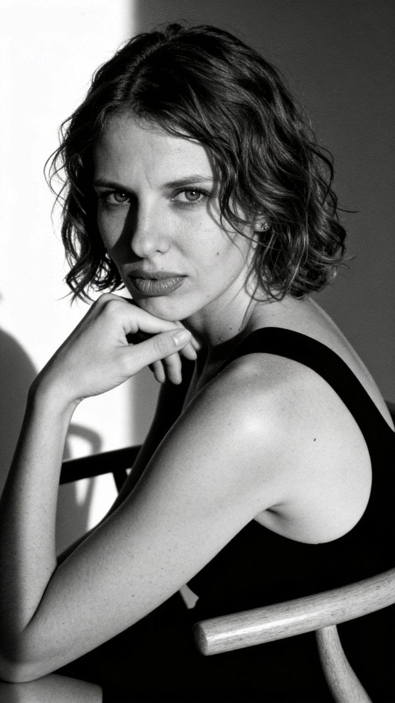

Лана // Проводник
Трансформации, на которые раньше уходили годы, происходят за считанные минуты.
Записаться на консультацию«Моя главная цель — не подсадить вас на терапию. После работы со мной люди учатся жить без психолога и становятся авторами своей реальности».
Мой метод — это отражение моего стиля. Никакой шелухи, избыточности и пустых разговоров. Жесткая структура и кристальная ясность для стремительных действий.
Инструменты:
- Квантовая психология.
- Твердые измеримые результаты.
- Глубинное психотипирование.
Система 12 сфер + Интеграция.
Длительность сессии: от 1 до 2 часов (мы работаем не «по таймеру», а до результата).
Я не работаю «по таймеру» и не отпускаю вас без результата. В первый день мы закладываем фундамент вашей трансформации. Мы снимаем социальные маски и разрушаем иллюзии о том, чего вы якобы «должны» хотеть, чтобы найти то, что вам действительно нужно.
Ваши результаты:
- Кристальная ясность желаний: Вы сформируете свою «идеальную точку».
- Авторство своей стратегии: Составите для себя точные рекомендации из состояния кристальной внутренней правды.
- Освобождение от ложных целей.
- Доступ к скрытому ресурсу: Превратим подавленную агрессию в мощное топливо для действий.
- Фундаментальное спокойствие и твердая опора.
Мы помещаем вас в точку выбора через 10 лет и сталкиваем лицом к лицу с двумя сценариями: успех или провал. Через эту проекцию мы находим ту самую «поломку» в прошлом, которая тянет вас назад, и переписываем её.
Ваши результаты:
- Нейтрализация страха провала.
- Глубинное исцеление первопричины ранней детской травмы.
- Получение «ресурса из поля».
- Синхронизация с линией времени и прямой маршрут к целям.
- Квантовый скачок к успеху.
Мы берем за ориентир вашу идеальную финансовую реальность и используем это как лакмусовую бумажку. Мы идем в первопричину: исцеляем травму, из-за которой деньги связаны с тяжестью, и демонтируем программы нехватки.
Ваши результаты:
- Разрушение сценария бедности и деструктивных паттернов.
- Исцеление «тревоги заработка» (связь денег с опасностью).
- Снятие финансовых блоков и расширение пропускной способности.
- Тотальное расширение емкости для гигантских сумм.
- Состояние финансовой неуязвимости.
Мы ставим в поле две фигуры: вас и жесткого Критика. Идем в первопричину — точку в детстве, где вас осекли. Используя квантовую физику, мы растождествляем вас с фигурой Критика. Вы вернете себе право быть видимым.
Ваши результаты:
- Уничтожение внутреннего критика и исцеление травмы сравнения.
- Тотальная безопасность в публичности (снятие синдрома хорошей девочки).
- Активация «Чистого голоса» — ваши слова приобретут вес.
- Разрушение страха «быть самозванцем».
- Легкость в построении премиальных связей и неязвимость к хейту.
Зачастую достижению цели мешает внутренний хаос. Чтобы прекратить войну субличностей, мы идем в корневую травму — момент зачатия. Мы напитываем вас чистым ресурсом от абсолютных фигур Матери и Отца.
Ваши результаты:
- Выход из матрицы выживания и «треугольника Карпмана».
- Исцеление базовой уязвимости и фоновой тревоги.
- Обретение эталонной поддержки и чувства безопасности.
- Сборка целостной личности (Творец, Опора, Стратег).
- Разблокировка вашего самого «горящего» запроса.
Мы выстраиваем путь к масштабной цели через диагностику отношений с мамой (ценность) и папой (проявленность). Мы находим точку сбоя, прорабатываем травму за минуты и наполняем линию жизни ресурсом.
Ваши результаты:
- Обретение безусловной самоценности (Проработка 1 шага).
- Масштабная проявленность в социуме (Проработка 2 шага).
- Возвращение «состояния Творца» и детского драйва.
- Уничтожение «невидимого потолка».
- Твердый энергетический шаг к реализации прямо на сессии.
Тело часто создает симптом, чтобы защитить нас. Мы спускаемся в родовую систему, находим предка, с которого началась поломка, разрываем родовые контракты и интегрируем здоровую энергию здесь и сейчас.
Ваши результаты:
- Уничтожение скрытых выгод болезни или симптома.
- Освобождение от родовых обетов и кармических договоров.
- Восстановление энергетической целостности тела.
- Квантовая перезагрузка на клеточном уровне.
- Твердые изменения физического состояния в реальности.
Мы ставим в поле партнера и «идеальную женщину/мужчину» (вашу вытесненную Тень). Мы раздуваем ресурс этой Тени до максимума и присваиваем его вам, мгновенно меняя динамику отношений.
Ваши результаты:
- Фундаментальная профилактика измен и треугольников.
- Освобождение от деструктивных родовых сценариев любви.
- Тотальный магнетизм и присвоение сексуальности.
- Исцеление корневой травмы отвержения.
- Абсолютная самоценность без конкуренции.
Мы находим теневую противоположность вашего идеала — архетип «Неудачника». Мы намеренно сталкиваемся с разрушающей субличностью («ведьмой») и нейтрализуем ее власть, освобождая ваш ресурс.
Ваши результаты:
- Разрушение бессознательного маршрута к провалу.
- Освобождение от иллюзии «ничтожности» и самозванца.
- Уничтожение хронического «Комплекса» (навязчивой проблемы).
- Укрощение внутренних демонов и возврат энергии.
- Абсолютное право на масштаб и успех.
Переход на уровень Наставничества. Мы разбираем этажи вашей психики и прорабатываем фигуру Отца (способность достигать целей в социуме). Вы получаете уникальный алгоритм квантовой самопомощи.
Ваши результаты:
- Декодирование собственной психики и точек травматики.
- Разблокировка энергии Достигатора (интеграция Отца).
- Овладение технологией квантовой самопомощи.
- Выход из позиции «вечного ученика».
- Интеграция позиции Мастера и самостоятельная корректировка реальности.
Мы тестируем 3 варианта вашей реализации прямо в Поле. Идем в ваш самый большой страх (точку неудачи), чтобы забрать оттуда потенциал, и выстраиваем пошаговую стратегию достижения главной цели.
Ваши результаты:
- Кристальная ясность истинного предназначения.
- Трансформация страха провала в плюс энергии.
- Обретение внутренней тишины через точку «Пустоты».
- Синхронизация жизненной энергии и цели.
- Твердая стратегия коучинговых действий.
Мы идем в самую страшную фантазию — публичный провал, чтобы психика перестала саботировать успех. Исцеляем травму первой проявленности и превращаем агрессивную толпу в преданных поклонников.
Ваши результаты:
- Абсолютная неуязвимость к критике и публичному позору.
- Отключение программы саморазрушения перед масштабом.
- Трансформация врагов в фанатов на энергетическом уровне.
- Мастерство выдерживать масштаб и внимание масс.
- Построение стратегической ресурсной базы нетворкинга.
Финальная сборка личности. Оцифровка пути от «Точки А». Мы вычищаем остаточный саботаж (привычку откладывать триумф) и снимаем корону «идеальности», делая вас неуязвимым в реальной жизни.
Ваши результаты:
- Тотальное присвоение своего успеха и масштаба.
- Уничтожение привычки «откладывать жизнь» на потом.
- Квантовая инициация в новый статус успешного человека.
- Прививка от перфекционизма и иллюзии «идеальной жизни».
- Твердая автономность и статус абсолютного Автора.
Вы когда-нибудь задумывались, почему, обладая знаниями, амбициями и ресурсами, вы раз за разом саботируете собственный успех?
Вы ставите грандиозные цели, но в решающий момент проваливаетесь в прокрастинацию. Вы хотите здоровой, любящей семьи, но вас магнитом тянет к холодным, эмоционально недоступным партнерам. Вы достигаете определенной планки в доходах, и внезапно ваше тело говорит «стоп», погружая вас в апатию, болезни или состояние полного выгорания.
Вам кажется, что вы просто «недостаточно стараетесь». Но как клинический психолог, я могу сказать прямо: ваши проблемы с деньгами и отношениями — это не про лень и не про плохой тайм-менеджмент. Это блестяще работающие защитные механизмы вашей психики.
Симптом 1: Броня «Хищницы» и выбор холодных партнеров
Многие женщины живут в колоссальном расщеплении. С одной стороны — успешная, непробиваемая броня. С другой — испуганная девочка, которая панически боится, что ее бросят. Елена в 6 лет стала родителем для мамы и пережила предательство отца. Во взрослой жизни она бессознательно выбирала холодных мужчин, пытаясь «растопить» их, чтобы доказать свою ценность. Если вы раз за разом пытаетесь заслужить любовь тех, кто не способен ее дать — вы отыгрываете травму.
Симптом 2: Телесная диссоциация и ловушка Спасателя
Когда вы вырастаете в деньгах, тело может начать вас предавать. Мария росла в доходах, но ее тело впадало в состояние «амебы», отключая энергию. Мечта о «волшебном спонсоре» — это опасный регресс в детскую позицию. Внешняя опора иллюзорна. Только взрослая, спокойная стабильность способна экологично удержать большие деньги.
Давайте без долгих прелюдий. Вы смотрите на свой доход, потом смотрите на количество усилий, которые вкладываете в бизнес, и чувствуете, как внутри поднимается глухая, тяжелая тошнота. Ваш банковский счет упорно не соответствует вашему интеллекту и вашей усталости.
Проблема не в воронках продаж. Проблема в том, что вы элегантно, профессионально и безжалостно кастрируете собственную жизненную силу.
Масштабные проекты, дерзкие чеки и влияние — это акт агрессивной экспансии. Это животная способность сказать реальности: «Я здесь. И я заберу свое». Но в детстве вас научили быть «хорошими». Вашу злость назвали неудобной, а вашу сексуальность — грязной. Вы сжали челюсти, заблокировали диафрагму и заморозили свой таз. Вы упаковали хищника в корсет из вежливости.
Нейронное самоубийство
Исследования фМРТ кричат об одном: подавление Тени сжирает колоссальный ресурс префронтальной коры мозга. Вы тратите 90% энергии на то, чтобы удерживать мышечный панцирь и улыбаться, когда хочется рычать. На строительство империи остаются жалкие 10%.
Агрессия — это клыки, необходимые для захвата территорий. Сексуальность — это магнетический контакт с материей. Замороженный таз не способен генерировать и удерживать большие ресурсы. Большие деньги приходят только на расслабленную, хищную витальность. Чтобы совершить реальный скачок, вам придется вернуть себе право быть живым, дышащим и пугающе неудобным.
Связь с ПроводникомТы можешь обложиться курсами по инвестициям, выстроить идеальную автоворонку и медитировать на чеки с шестью нулями, но если твоя бабушка в свое время прятала сухари под матрасом, а мать всю жизнь «несла свой крест», твое тело будет саботировать любой миллионный контракт.
Почему? Потому что в твоем подсознании прописан жесткий контракт: «Быть богатой — значит предать свой род». Давай снимем мистический налет и посмотрим на это глазами науки. Сейчас, обучаясь в Бразилии на бизнес-администрировании, я вижу, как личная экономика человека напрямую зависит от его биологии.
1. Твои гены «помнят» голод
В 2014-2016 годах доказали: травмы передаются по наследству. У потомков людей, переживших массовый голод, изменен ген FKBP5. Твое тело на клеточном уровне считает, что «высовываться» и иметь много ресурсов — опасно. Гены шепчут: «Будь незаметной, будь бедной — так ты выживешь».
2. Сжатый мозг: Биология дефицита
Исследования подтвердили: хронический стресс, в котором жили твои родители, меняет структуру мозга ребенка. Зона префронтальной коры работает в режиме энергосбережения. Твой биологический компьютер просто не тянет программу «Миллионер».
3. Лояльность маме: Налог на успех
Если твоя мать всю жизнь экономила на себе, твое бессознательное воспринимает успех как оскорбление её памяти. Ты выбираешь оставаться «своей» — бедной, но принятой семьей.
Как взломать этот код?
В бизнесе, если система приносит убытки, её реструктурируют. Нельзя построить современный технологичный рехаб на старом программном обеспечении «выживальщика». Твои предки выживали, чтобы ты жила. Хватит предавать их жертву. Пора забрать свое по праву рождения.